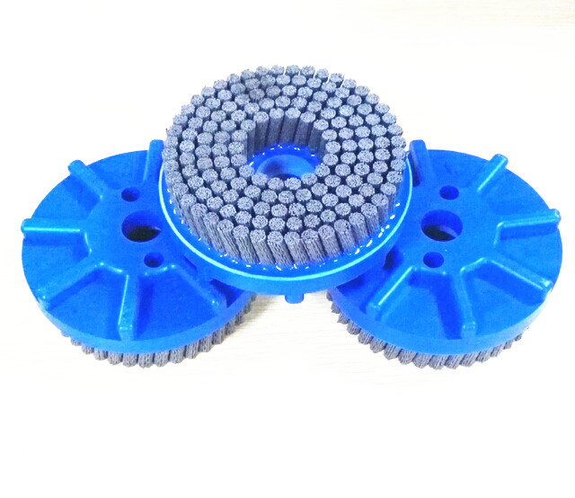
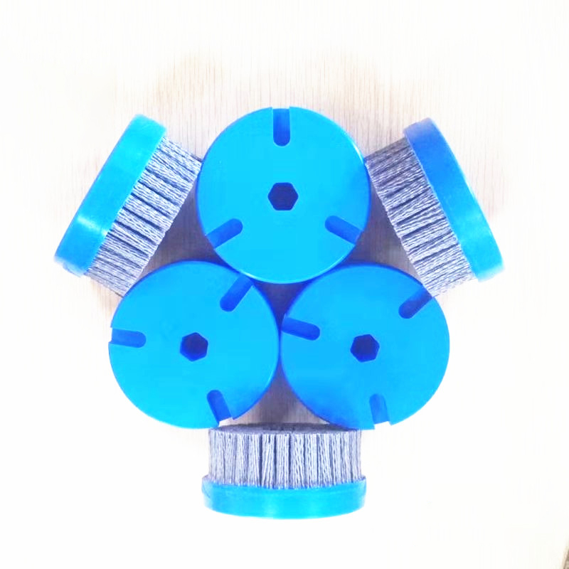
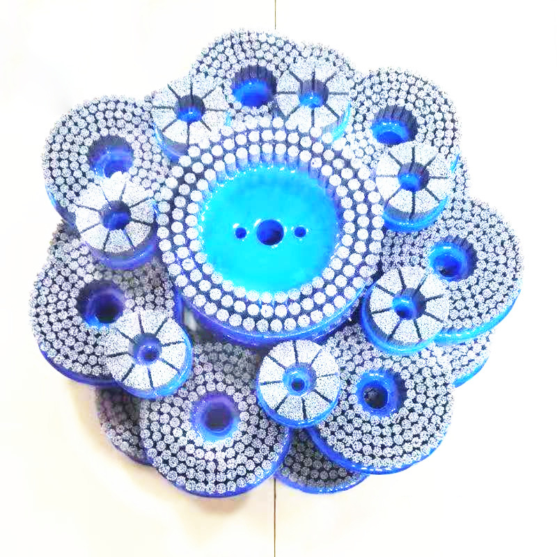
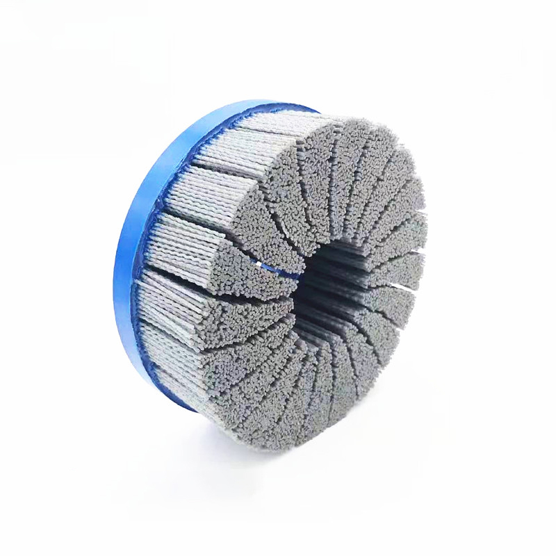
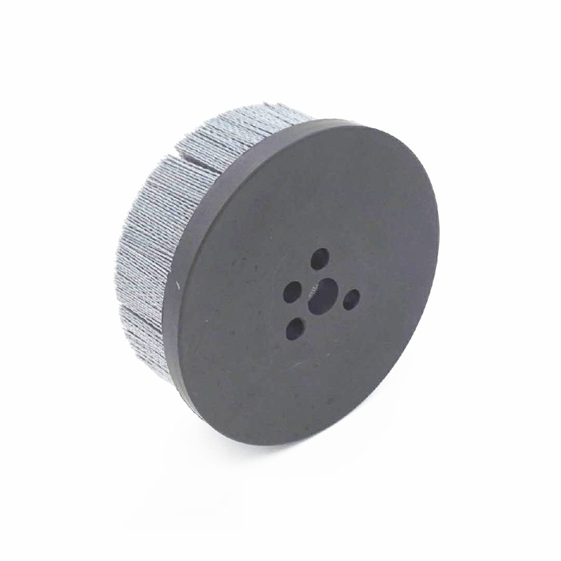
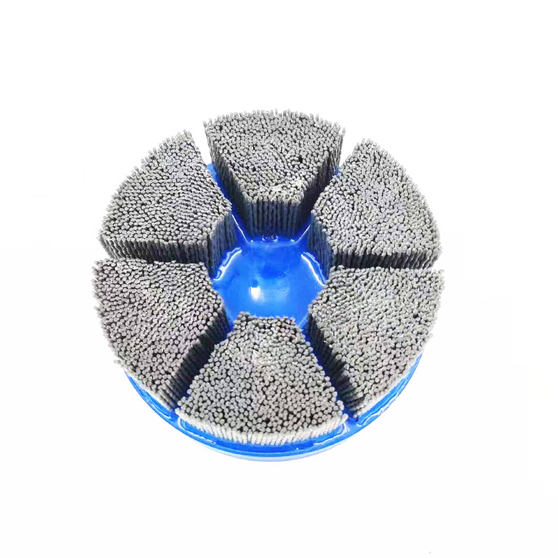

FB-TW SERIES
Twist Knot Wheel Brush
High-impact rust, scale and weld-spatter removal for angle grinders and bench machines.
Industrial wire brush manufacturer · China
Ferrabrio engineers wheel, cup, end and bonded brushes for deburring, finishing, cleaning and production-line processes. Share the job; we configure the brush.

Industrial brush catalogue
Representative product families for overseas buyers. Final dimensions, wire grade, RPM and arbor fitment are confirmed against your machine, workpiece and process.
High-impact rust, scale and weld-spatter removal for angle grinders and bench machines.

Controlled surface cleaning and edge work where access and finish consistency matter.

Large-diameter wheel for conveyor, fabrication and stationary equipment applications.

Non-metallic brushing for blending, light burr removal and sensitive surfaces.

Dense, precisely located filament packs for stable process contact and repeatability.

Compact brush for guided cleaning, deburring and specialized fixture integration.
Design for your line
For industrial buyers, a useful quotation starts with the application. Our configuration sheet translates your process into a manufacturable brush specification.
| Brush style | Wheel / cup / end / roller / strip / bonded |
|---|---|
| Outside diameter | Ø25–600 mm, project-specific |
| Filament diameter | 0.08–0.80 mm, material dependent |
| Fill material | Steel / inox / brass / abrasive nylon |
| Core & hub | Steel, plastic, wood or engineered base |
| Mounting | Bore, keyway, threaded arbor or drawing-led |
| Operating speed | Quoted after geometry & safety review |
Where they work
Remove scale, rust, coating residue and weld spatter while preparing a consistent substrate.
Support seam cleaning, component deburring and finishing steps in high-repeat workflows.
Access internal, external and edge surfaces with tube, roller and custom-profile brushes.
Choose the appropriate wire and brush density for controlled field cleaning and refurbishment.
From inquiry to repeat order
Send photos, workpiece material, machine details and desired surface result.
We align geometry, filament and fitment into an approval-ready specification.
Confirm the product against agreed reference points before volume production.
Plan labels, carton configuration and export documentation for your destination.
Knowledge for buyers
Practical notes for engineers, distributors and procurement teams selecting industrial brushes.
The critical choices are not only diameter and wire. Start with the process, then examine filament, trim, hub and speed as one system.
Read the guideTraceable specifications, technical responsiveness and dependable documentation increasingly separate a manufacturer from a product listing.
Read the market noteUse the intended removal rate, substrate sensitivity and downstream coating requirements to make the right call.
Read the comparisonBefore you request a quote
Send what you know. A drawing is useful, but it is not required to start an application review.
Include the workpiece material, contaminant or burr, machine or spindle, mounting interface, target finish and quantity. Photos or drawings help us assess the contact area.
Yes. We can review wheel, cup, end, roller, strip and bonded brush geometry, filament, trim, density, hub and mounting requirements against the intended process.
Start with removal requirement, substrate sensitivity and downstream process. Wire is suited to mechanical impact; abrasive nylon supports more controlled cleaning and blending.
Request for quotation
Submit a concise technical brief. The form prepares an email in your mail client so you can retain the full inquiry record.
For accurate recommendations, include your workpiece material, tool or machine, target finish and required quantity. Prefer email? Write to info@ferrabrio.com.